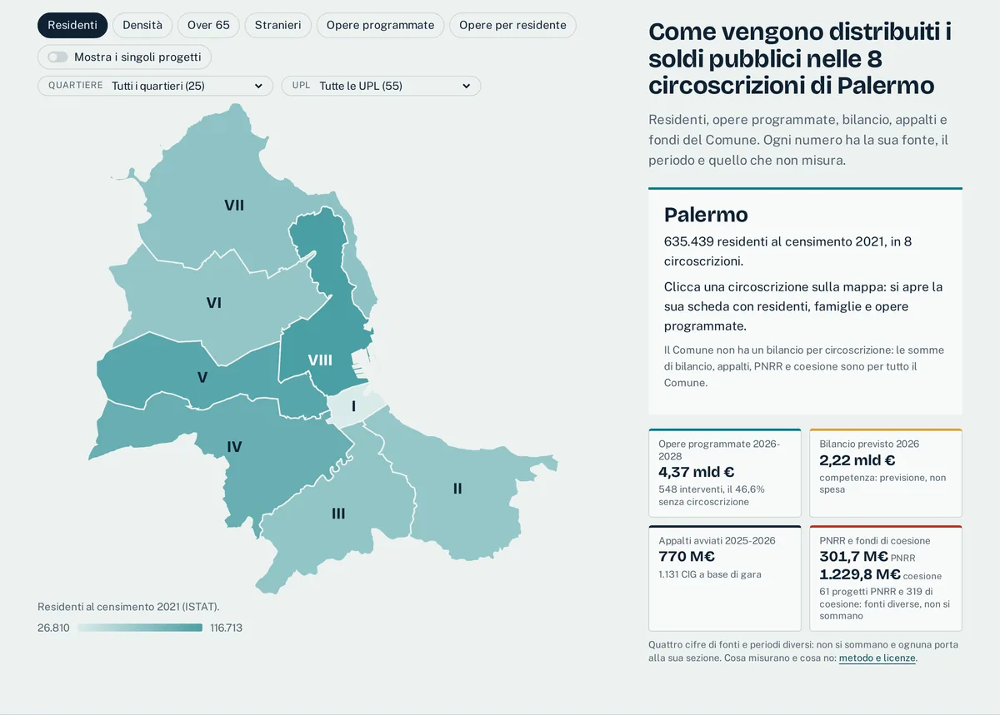
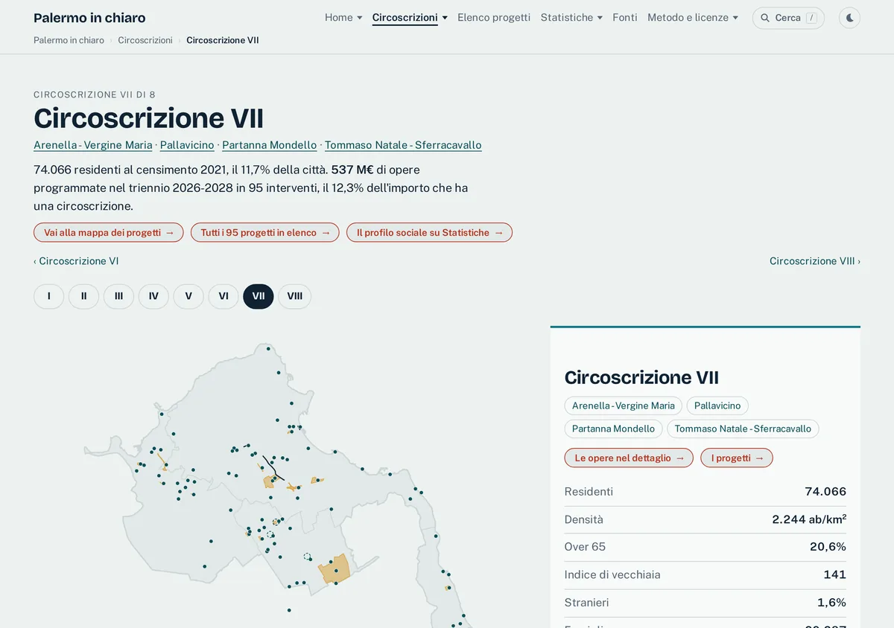
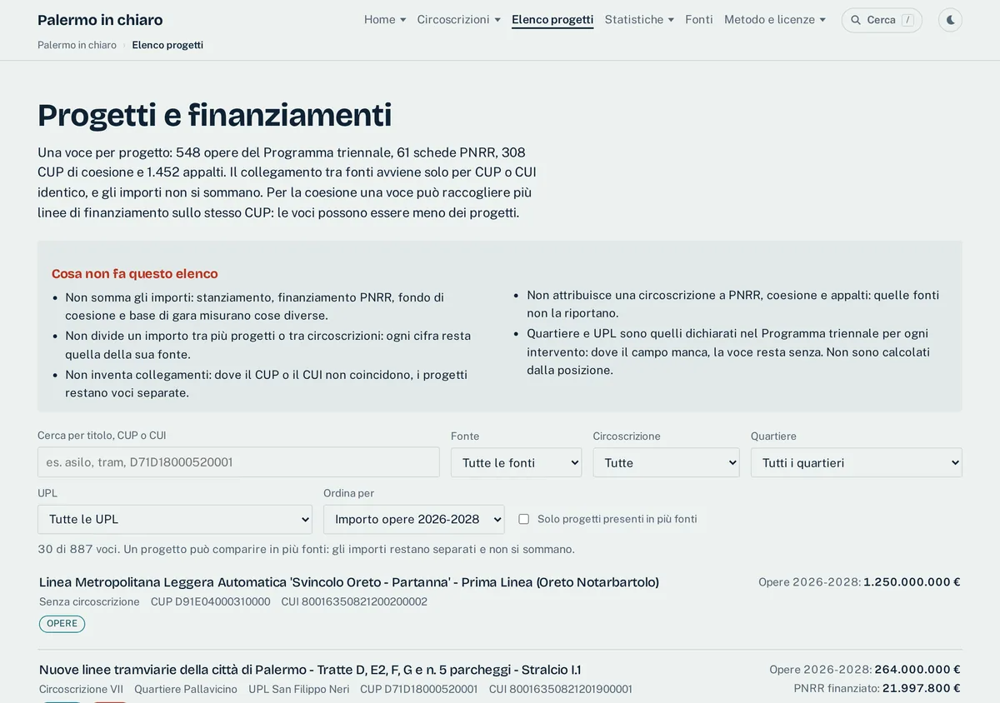
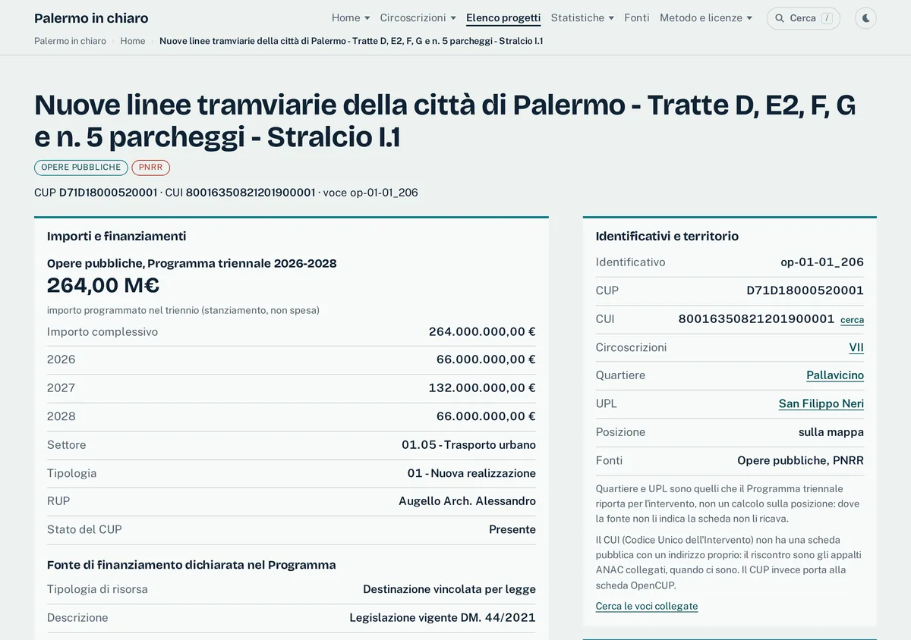
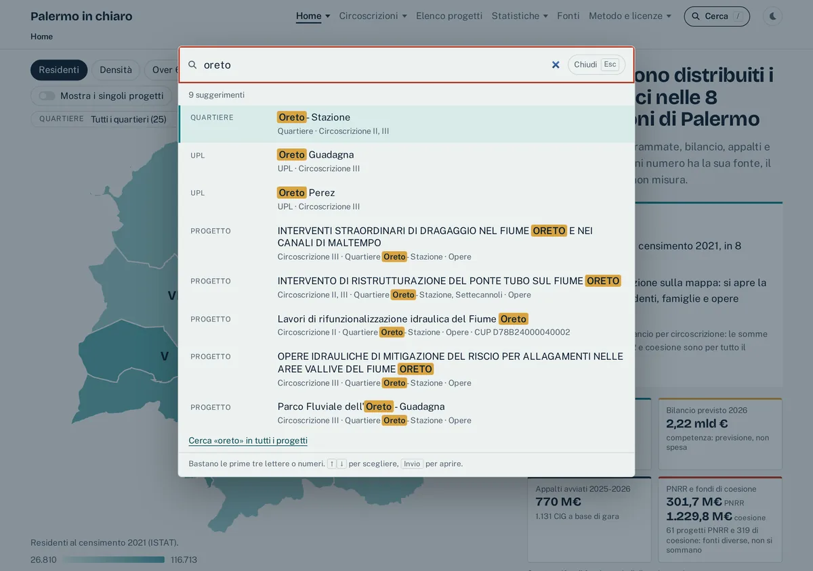
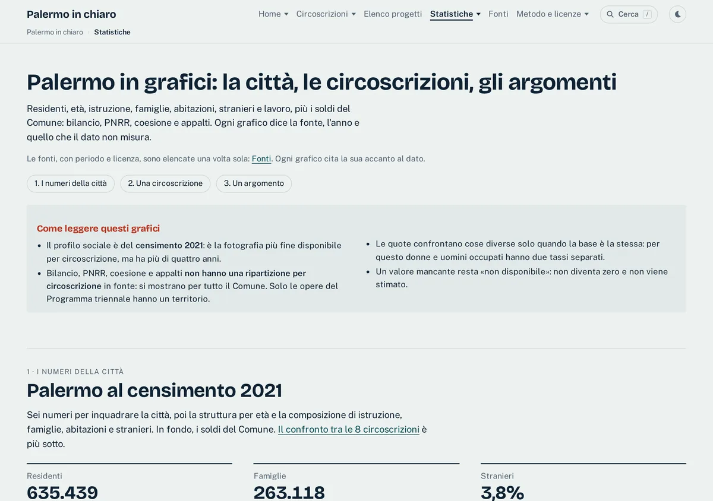
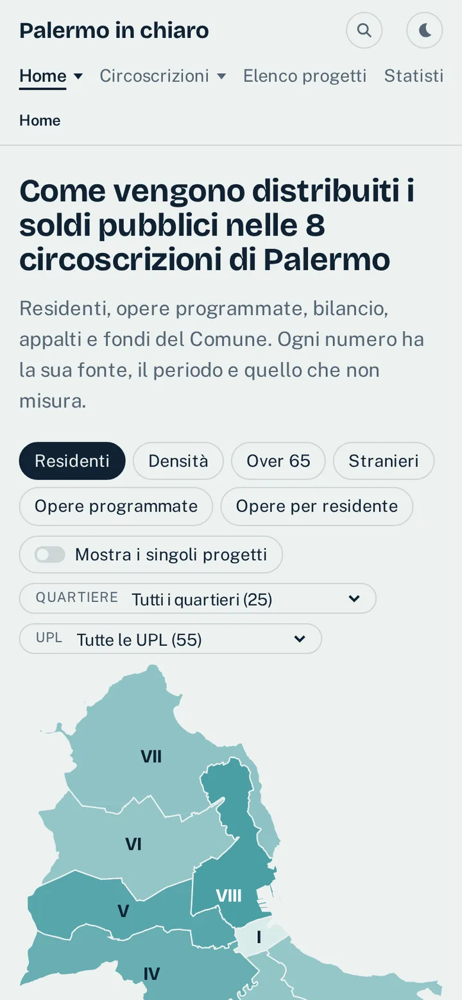

Guida: cosa è, come si legge, come si cerca
Palermo in chiaro mette in mappa e in elenco i dati pubblici del Comune di Palermo: le opere programmate, il bilancio, gli appalti, i fondi del PNRR e della coesione, i residenti del censimento. Questa guida spiega passo per passo cosa trovi, come si leggono i numeri e come si cerca un progetto o un finanziamento. Non serve sapere nulla di dati o di informatica. Gli screenshot della guida si aprono uno alla volta: clicca un'immagine per vederla grande e usa le frecce per passare alla successiva.
In tre righe. Il sito non produce dati nuovi: mette insieme quelli che il Comune, l'ISTAT, l'ANAC e OpenCoesione pubblicano già, e li rende leggibili.
Ogni numero porta con sé la fonte, il periodo e quello che non misura: senza queste tre informazioni un numero non dice niente.
Non è un sito del Comune: è un progetto indipendente di OpenDataSicilia. Un valore strano è un segnale da approfondire, non la prova di uno spreco o di un illecito.
Che cos'è questo sito
Palermo in chiaro risponde a una domanda semplice: dove finiscono i soldi pubblici della città. Per farlo usa sei gruppi di dati, tutti già pubblici:
- Opere pubbliche: i 548 interventi del Programma triennale dei lavori pubblici 2026-2028, con l'importo programmato per ciascuno e la circoscrizione in cui cade.
- Bilancio: le previsioni di spesa del Comune per missione, dal bilancio di previsione 2026-2028.
- Appalti: le gare avviate dal Comune, una riga per CIG, con l'importo a base di gara.
- PNRR: i 61 progetti del Piano nazionale di ripresa e resilienza seguiti dal Comune.
- Fondi di coesione: i progetti europei e nazionali in cui il Comune è tra i beneficiari.
- Residenti: le cifre del censimento ISTAT 2021 per le 8 circoscrizioni.
Le circoscrizioni sono le otto parti in cui è divisa Palermo. Si chiamano con i numeri romani, da I a VIII, e ognuna raggruppa alcuni quartieri: la VII, per esempio, comprende Arenella-Vergine Maria, Pallavicino, Partanna Mondello e Tommaso Natale-Sferracavallo. Il Comune non tiene un bilancio separato per circoscrizione: per questo il sito dice sempre se un numero riguarda tutta la città o una sua parte.
Come si leggono i numeri
Quasi tutti i fraintendimenti su questi dati nascono da tre domande che nessuno fa. Il sito le fa per te, e le risposte sono scritte accanto al numero.
- Chi lo dice? Accanto a ogni grafico e a ogni cifra c'è la fonte: Comune di Palermo, ISTAT, ANAC, OpenCoesione. In Fonti c'è anche la data in cui ogni elenco è stato letto: se è di qualche mese fa, il dato potrebbe essere cambiato.
- Di che periodo parla? Un importo del 2026 e uno del 2028 dicono cose diverse. Il periodo è scritto nel titolo o nella nota del grafico, e nella scheda di ogni progetto gli importi sono divisi anno per anno.
- Cosa non misura? Ogni sezione ha un riquadro «Cosa non misura». È la parte più importante: dice cosa il dato non può dirti, per esempio che il 47% dell'importo delle opere non ha una circoscrizione e resta fuori dai confronti tra quartieri.
Poi ci sono due trappole da evitare:
- Stanziamento non è spesa. Il bilancio mostra quanto il Comune prevede di spendere, e un'opera programmata è un lavoro previsto: nessuno dei due dice quanto è già stato pagato.
- Fonti diverse non si sommano. Un importo di gara, un finanziamento PNRR e uno stanziamento di bilancio misurano cose diverse, anche quando parlano dello stesso progetto. Il sito li mostra separati e non li addiziona mai.
Se un numero ti sembra impossibile, spesso lo è: due appalti del 2025 hanno in fonte un importo di circa 2.684 milioni di euro, evidentemente sbagliato. Il sito non li corregge, li segnala. Un valore anomalo è un indizio da verificare alla fonte, non una conclusione.
Le parole che servono
- Circoscrizione
- Una delle otto parti della città. Raggruppa quartieri e UPL (unità di pianificazione locale), che è il livello più fine usato nel Programma triennale.
- Programma triennale delle opere pubbliche
- L'elenco dei lavori che il Comune prevede di fare in tre anni, con quanto costano. È un programma, non un cantiere aperto.
- Stanziamento di competenza
- La somma che il bilancio assegna a una missione di spesa per un anno. È una previsione, non un pagamento.
- CIG
- Codice identificativo di gara: il numero che identifica un appalto. Nel sito c'è una riga per ogni CIG.
- CUP
- Codice unico di progetto: identifica un'opera o un investimento pubblico. È il modo con cui il sito collega tra loro fonti diverse.
- CUI
- Codice unico di intervento, usato nei dati ANAC sugli appalti. Quando CUI e CUP coincidono, il sito collega un appalto al suo progetto.
- PNRR
- Il Piano nazionale di ripresa e resilienza, con i fondi europei del Next Generation EU. I progetti PNRR del Comune hanno una scheda sul sito del Comune.
- Fondi di coesione
- I fondi europei e nazionali che finanziano progetti nelle regioni con ritardi di sviluppo. I dati arrivano dal portale OpenCoesione.
La mappa della città

- Scegli cosa guardare. Le sei misure in alto cambiano il colore delle circoscrizioni: Residenti, Densità, Over 65, Stranieri, Opere programmate, Opere per residente. Il colore più scuro indica il valore più alto; la scala è scritta sotto la mappa.
- Clicca una circoscrizione. Il clic su un poligono apre la pagina di quella circoscrizione. Si può fare anche da tastiera: con Tab arrivi al poligono, con Invio lo apri.
- Scendi di livello. I menù Quartiere e UPL restringono la mappa a una parte della città. L'interruttore Mostra i singoli progetti fa comparire i punti dei progetti localizzati.
- Guarda la scheda. A destra compare la sintesi: residenti, famiglie, over 65, laureati, abitazioni vuote, e le quattro cifre del Comune (opere, bilancio, appalti, PNRR e coesione). Sono di fonti e periodi diversi: non si sommano.
La pagina di una circoscrizione

Ogni circoscrizione ha una pagina sua, con quattro capitoli in ordine fisso:
- I soldi. Le opere programmate nel triennio, lette per settore, per anno e per quartiere, con il confronto tra le otto circoscrizioni.
- Il territorio. Quartieri e UPL, cioè dove ricadono i progetti, livello per livello.
- I progetti. Le voci che cadono qui, con il collegamento alla scheda di ciascuna.
- Il resto del Comune. Bilancio, appalti, PNRR e coesione, che la fonte non divide per circoscrizione: sono lì per dare la scala, non per dire quanto tocca a questo quartiere.
In alto, i pulsanti Vai alla mappa dei progetti, Tutti i progetti in elenco e Il profilo sociale su Statistiche portano direttamente alla parte che interessa. Le frecce Circoscrizione VI e Circoscrizione VIII passano alla precedente e alla successiva.
Cercare un progetto o un finanziamento
Ci sono tre strade, dalla più larga alla più stretta.
1. L'elenco dei progetti e i suoi filtri

La pagina Elenco progetti contiene tutte le voci del sito: le opere del Programma triennale, le schede PNRR, i progetti di coesione e, più in basso, gli appalti. Si filtra così:
- Cerca per titolo, CUP o CUI: basta una parola del titolo («tram», «asilo», «mercato») oppure il codice, se ce l'hai già.
- Fonte: solo opere, solo PNRR, solo coesione, solo appalti collegati.
- Circoscrizione, quartiere, UPL: i tre livelli si stringono a vicenda. Scegliere una UPL sceglie anche il suo quartiere.
- Ordina per: importo delle opere, importo PNRR, finanziamento di coesione oppure titolo.
- Solo progetti presenti in più fonti: mostra le voci che hanno un CUP o un CUI in comune tra due fonti, cioè i casi in cui lo stesso progetto è finanziato da più parti.
Sotto i filtri compare il conteggio («30 di 887 voci»), e ogni modifica dei filtri cambia l'indirizzo della pagina: un elenco filtrato si può copiare e mandare a qualcuno, e chi lo apre vede la stessa selezione. Le etichette sopra l'elenco si tolgono con un clic.
2. La scheda di un progetto

Il clic sul nome di una voce apre la sua scheda. Qui trovi:
- le etichette delle fonti in cui compare il progetto (opere pubbliche, PNRR, coesione, appalti);
- gli importi separati per fonte, con le annualità 2026, 2027 e 2028 e il tipo di finanziamento dichiarato;
- gli identificativi (CUP, CUI e il codice della voce), la circoscrizione, il quartiere e la UPL;
- i collegamenti alla scheda OpenCUP, alla scheda OpenCoesione, al progetto PNRR del Comune e agli appalti collegati.
Il percorso in alto dice da dove sei arrivato: se hai aperto la scheda dalla Circoscrizione VII, in alto leggi «Palermo in chiaro › Circoscrizioni › Circoscrizione VII», e torni indietro con un clic.
3. La ricerca globale

Il pulsante Cerca in alto a destra (oppure il tasto /, o Ctrl+K) apre una finestra che cerca in tutto il sito: pagine, sezioni, circoscrizioni, quartieri, UPL e tutti i progetti. Bastano tre lettere o numeri; non importa se scrivi con o senza accenti, maiuscole o minuscole, e un refuso non blocca la ricerca. Si sceglie con le frecce e si apre con Invio. In fondo alla finestra c'è sempre il collegamento che porta la stessa parola dentro l'elenco completo.
Cercare un appalto
Gli appalti non si caricano all'apertura del sito: sono circa 1.450 righe. In fondo alla pagina Elenco progetti c'è il pulsante Carica gli appalti; dopo il clic compare una tabella con CIG, oggetto, anno, importo a base di gara e, dove esiste, il progetto collegato. Si cerca per oggetto, CIG o CUI e si filtra per anno di pubblicazione. Anche qui l'importo è quello a base di gara: non è la somma pagata all'impresa.
I grafici delle statistiche

La pagina Statistiche non parla di soldi ma di persone: residenti, età, istruzione, famiglie, abitazioni, stranieri e lavoro, dal censimento 2021. È divisa in tre capitoli: I numeri della città, Una circoscrizione, Un argomento. Ogni grafico porta accanto la sua fonte e la sua nota; il confronto tra circoscrizioni si fa nello stesso capitolo, con la stessa base di calcolo.
Da dove vengono i numeri
Tre pagine raccontano il dietro le quinte, e sono quelle da leggere quando un numero serve per decidere o per scrivere:
- Fonti: l'elenco completo, una volta sola, con periodo, data di lettura, licenza e le pagine in cui ogni fonte è usata.
- Metodo e licenze: come nasce ogni numero, con quali controlli, e cosa succede quando un totale non torna. Se un controllo non torna, lo script si ferma e il dato non viene pubblicato.
- Cosa non misura: i limiti, in un elenco solo. È la pagina che smentisce le conclusioni affrettate.
Le licenze non sono tutte uguali: i dati ISTAT e OpenCoesione sono CC BY 4.0, quelli ANAC CC BY-SA 4.0, i dati del Comune si citano come atti pubblici. Il codice del sito è MIT. I dettagli sono in LICENZE.md.
Sul telefono e col tema scuro

Il sito funziona allo stesso modo su telefono e su computer: cambia la disposizione, non il contenuto. Se lo schermo è stretto, il menù scorre in orizzontale e i grafici si mettono in colonna. Il pulsante con il sole o la luna, in alto a destra, passa dal tema chiaro a quello scuro; se non lo tocchi, il sito segue la preferenza del tuo sistema. La scelta resta memorizzata nel browser.
Se un numero non torna
Può succedere: le fonti cambiano, gli atti si correggono, un dato può essere letto male. Una segnalazione serve se indica tre cose: dove compare il numero (la pagina e il grafico), quale fonte ufficiale lo smentisce, e quale sarebbe il valore giusto secondo quella fonte. Senza una fonte ufficiale il numero non si cambia. Le istruzioni sono nella pagina Metodo e licenze.
Da dove cominciare
- Vuoi capire la città in un minuto: la mappa della home.
- Ti interessa il tuo quartiere: la pagina della tua circoscrizione (qui la VII, dalla barra in alto scegli la tua).
- Cerchi un'opera o un finanziamento preciso: l'elenco dei progetti o la ricerca con /.